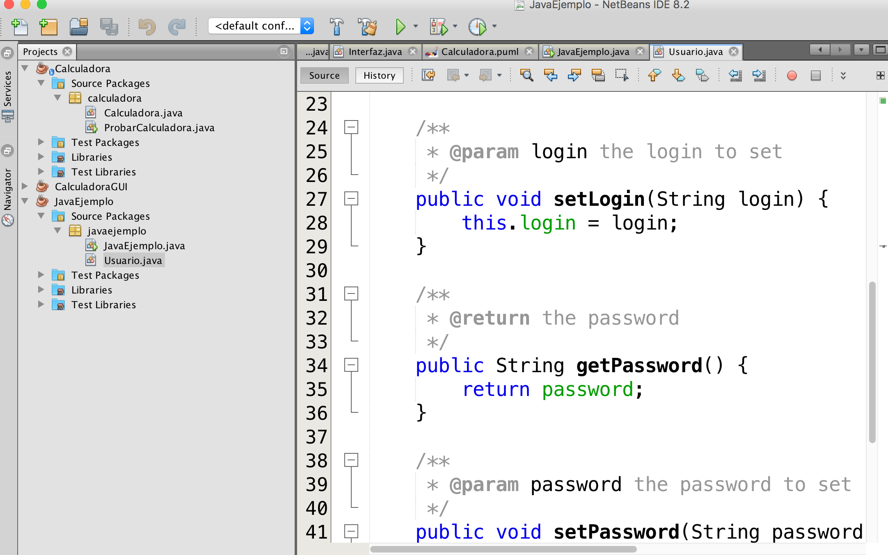

2.1.3.2.- Edición de programas en NetBeans.
Caso práctico
—Vamos a hacer el primer ejemplo -—comenta Ana, entusiasmada—. Después de todo, no debemos perder de vista la finalidad de la herramienta, ESCRIBIR PROGRAMAS!


En este sencillo ejemplo se ve una modificación de las líneas de código en la ventana de codificación del archivo Main.java del proyecto ejemplo que acabamos de crear.
Las dos líneas que aparecen resaltadas se han escrito sobre la ventana y, tal y como significan en lenguaje Java, su ejecución implicará que sendos mensajes encerrados entre comillas y entre paréntesis saldrán impresos.
No hay que decir que la programación en Java no es objeto del presente módulo, pero puedes probar con algunos ejemplos en Java que tengas de otros módulos.
Mientras escribimos en el editor de textos nos percatamos de varias características de NetBeans que ya hemos señalado en páginas anteriores:
- Autocompletado de código.
- Coloración de comandos.
- Subrayado en rojo cuando hay algún error y posibilidad de depuración y corrección de forma visual, mediante un pequeño icono que aparece a la izquierda de la línea defectuosa.